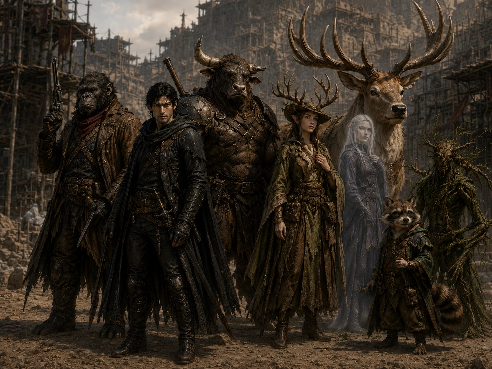

Water is scarce.
Magic is outlawed.
The Baron owns everything else.
In the rock-diseased desert called the Blighted West, one city still stands: Abrams Rest, the last clean water in a poisoned land, and the iron fist of Baron Maxim Von Basten that squeezes it. This is the chronicle of the strangers who rode in on the Desert Rose — and the unrest they've caused ever since.
The Story So Far
A thousand years have passed since the Great Devastation, and the Astlands have not recovered.
The Blighted West is a land of poisoned water, diseased stone and things stubborn enough to survive both. Food is made through magic. Machines run on magicite. The old roads lead through ruins whose builders are no longer remembered. Beyond the walls, the wasteland kills freely. Within them, survival usually belongs to whoever owns the well.
In Abrams Rest, that man is Baron Maxim Von Basten.
The Baron offers work, water and safety to those desperate enough to enter his city. In return, he takes taxes, service and years. Miss a quota and the debt grows. Try to leave while owing him and the gates remain closed. Those born with magic fare worse: collared, enslaved and reduced to whatever single spell their owners find useful.
It was toward this city that the Desert Rose carried a collection of strangers.
Chango K Caza boarded as a bounty hunter, with the archaeologist Nathan Indiana Croft in chains. Coren Vael came pursuing a rumour that threatened to drag him back into a past he had fled five years before. Hylanku Lonehorn sought a red-haired mage called Foxfire. Lira Cervan searched for her missing elk, Thallion. Quercucoonie hoped the knowledge of Abrams Rest might help him understand why his distant forest was dying.
Luxem offered no explanation at all.
They might have remained strangers had six goblins not come screaming through the carriage windows.
The fight was fast and ugly. Pistols cracked inside the carriage. Magic burned in a land where displaying it could earn a collar. Verdant Shade, Quercucoonie's tree-like eidolon, struck one goblin hard enough to make the result difficult to describe politely. When the last attacker fell, the survivors learned that theirs had not been the only battle aboard the train.
Everyone else was dead.
Worse, the goblins had stolen the magicite core that powered the Desert Rose. Without it, the train would never reach Abrams Rest. Engineer Thistogg offered several possible roads to salvation: the distant village of Pem, a temple where raw magicite might remain, or the trail left by the thieves.
The strangers chose the goblins.
Their tracks led east toward the Rabbit Rock Mountains. A night beneath the open sky loosened a few guarded truths. Quercucoonie spoke of his dying homeland. Coren admitted only that he was following a rumour. Lira had lost something precious. Hylanku had lost someone. Luxem kept her reasons to herself.
The next day brought them to Jane, a grieving woman drinking beside a fire. The Baron's men had killed her husband and son while hunting for mages. It was the party's first lesson in how Abrams Rest protected its people, though it would not be the last.
At the end of the trail, they found the goblin camp already slaughtered.
The thing responsible stood among the bodies like an abandoned statue. When the party approached, it woke. The ancient construct struck Luxem down and kept coming, indifferent to every blow that landed. Nathan identified it as a Setantii: an Old World machine, dead and dormant until the goblins found it and shoved the train's stolen magicite into its chest without understanding what they were doing. It woke hungry. It killed the goblins where they stood.
The same core that had woken it was the only thing keeping it upright. With his restraints loosened, Nathan talked the party through the extraction while the fight went on around them. Quercucoonie finally pried the core free, and the construct went still. Lira and Hylanku released the surviving captive animals, and Hylanku carried Luxem back toward the train.
She did not wake.
On the return journey, the party found a depowered Aiudara hidden within a crevice — an elven gate once used to leave the Astlands and return to another world. Whatever road it had once opened was gone. Skeletons rose nearby, led by an armed captain, and Hylanku nearly fell protecting the others. That night, Coren began hearing whispers he chose not to explain.
By the time they returned to the Desert Rose, Thistogg had buried the dead.
The recovered core brought the engine back to life. The train carried them onward, through the poisoned wastes and toward the walls of Abrams Rest. Refugees pleaded for entry outside the gates. Guards answered with rifles.
Inside, an escort calling himself Crosswind Phil led the party through the Hexes to the Dancing Cat. Phil had been paid by an unnamed benefactor to watch them, although he later admitted that he wanted the Baron removed. At the tavern, Luxem was placed in a room while a healer was sought. The rest began pulling at the city's loose threads.
Coren found Ressa Vann, the woman who had recruited him into the Silent Knives. From her he learned that the resistance had been almost entirely destroyed after its failed coup. Ressa believed Coren might have betrayed them. She had survived only to become one of the Baron's foremen.
Coren had also believed his former partner, Jareth, was dead.
Ressa had heard no such thing.
Rumours suggested that captives, mages and objects recovered from the Drop were taken to a building in the Cobbles. The city called it a library. Those who knew better called it the laboratory of Professor Godt — the mind behind the Baron's power.
Before the party could reach it, Lira found what she had come to Abrams Rest seeking. Thallion was alive, imprisoned beneath the Colosseum and marked for delivery to the Professor.
To win him back, the party entered the arena under a name chosen for the occasion: Abrams Unrest.
They faced five returning champions. Hylanku was brought down. Phil killed three opponents. Coren fought an orc that refused to stay fallen, while Quercucoonie held the crowd's attention long enough for Lira to revive the minotaur. The champions died, the party survived, and Thallion was released.
He ran directly to Lira.
Then the bats came.
They descended upon the Colosseum in numbers large enough to darken the sky, tearing through fighters and spectators alike. A red-skinned rider in horned armour circled above them on a giant white bat and accused the people of Abrams Rest of invading his domain.
The party escaped by carrying whoever could no longer carry themselves. Coren and Phil held opposite gates. Thallion bore the wounded. Hylanku staggered through the streets with companions in his arms while the city broke apart around them.
At the Dancing Cat, a masked healer worked openly without a runic collar. He restored the wounded but could offer no explanation for Luxem. Her body was uninjured. Nothing obvious prevented her from waking.
Outside, the rider delivered a final warning:
Do not enter Nar-Voth again.
Nar-Voth belonged to the Darklands, the world beneath the world. The Baron's miners had been pushing deeper through the Drop, and something below had noticed.
Ressa supplied vague work permits and a single pass into the Cobbles. The party entered disguised as disaster labourers and found that the city's wealthy quarter had suffered too — but its fountains still ran, its gardens still grew, and enslaved mages were forced to repair what the attack had damaged.
One such woman could not give Hylanku her name.
It had been taken from her.
Their assigned guard, Gaskin, sent them to clear the Riad, a bathhouse sealed by its own defence system. Outside they encountered Selene Von Basten, the Baron's daughter, carrying a large rifle and enough jewellery to feed several families. Inside, animated clay guardians attacked anything they judged a threat.
The party destroyed them.
Deeper within the Riad they found bodies in boiling pools, maintenance tunnels, empty suits of armour and a family hiding from the remaining bat. Hylanku killed the creature with his horns. The survivors surrendered their Cobbles passes in gratitude, and the party carried the bat's severed head outside as proof.
Their reward was permission to remain in the Cobbles and a flat in an old building.
Coren recognised it immediately.
It was the safehouse he had once shared with Jareth — the same place where, five years earlier, Coren had driven a blade through his partner's neck and fled. The furniture had changed, but a hidden drawer still held a charcoal portrait of Coren. The floor still bore the faded scar of Jareth's final spell.
While the city attempted to resume its ordinary cruelties, the party divided its attention.
Quercucoonie entered the Galleries and found a man being sold without a name, listed only as Auction Item 297. He bought him, called him Little Freeman for the sake of the paperwork, then learned that his real name was Kuldosk. Quercucoonie released him from ownership. Kuldosk, understandably uncertain about what was happening, chose to remain with the group.
Lira helped prepare the victims of the bat attack for burial. The bodies were wrapped and placed upon the water, to be carried over the falls and into the Drop. Among the mourners, she encouraged a thought the Baron would not have welcomed: the guards had protected neither the city nor its people.
Hylanku followed rumours of Foxfire. He learned that a red-haired mage matching her description had passed through the slave auctions and had been purchased by someone close to the Baron. Yangu the blacksmith broke the chain between Hylanku's manacles, though Hylanku kept the iron around his wrists as a reminder.
Coren found a witness to the aftermath of the failed coup. The man remembered Jareth's body being carried from the safehouse. Before the guards could dispose of it, Lorcend Von Basten — the Baron's silver-haired son — ordered that it be taken to the Professor's library.
That same day, Hylanku returned to the Dancing Cat and was shown the body upstairs.
Luxem had died while the party was in the Cobbles.
No wound explained it. The masked healer suggested a bleed within the brain, though ordinary magic should have repaired such a thing. Hylanku prayed over her and asked Jarák to watch whatever road came next. Her belongings were divided with more kindness than Abrams Rest usually allowed the dead, and a place was requested for her among the victims of the attack.
The living drank to her journey.
Then they continued with their own.

At the Magic Carpet, Hylanku finally told the party how he had come to Abrams Rest. Years earlier, a wandering caravan had rescued him from the Coccium Ruins. Old Bull, an elderly minotaur devoted to Jarák, taught him language, faith and duty. Foxfire became his friend.
When the Baron's men came to enslave her, Old Bull stood against them. A silver-haired enforcer shot him dead. The same bullet shattered Hylanku's horn. Hylanku was chained, sent into the mines around Inis Town and eventually brought to Abrams Rest after proving capable of reaching magicite deposits others could not.
The description of the killer matched Lorcend Von Basten.
After nightfall, the party climbed through a window Coren had prepared in the Professor's library.
Inside, they found records of experiments conducted across centuries.
One journal described a creature designated Subject 001, transformed into a suffering, undying mass.
Another told of Subject 126: a young ape taken from the banks of the Nanji River, altered dose by dose until his mind, body and purpose had been remade. The Professor had eventually placed him in cryogenic stasis and considered giving him a name.
Subject 442 was Jareth.
The blade in his neck had not killed him because a green hag named Callow May had cursed him never to die and never to heal. She called him the lover of her son.
Coren's mother was Callow May.
Subject 469 had once been Old Bull. The Professor stripped his body to the bone, bound it with necromantic magic and made it a guardian. Parts of him were removed for use elsewhere.
Elsewhere in the library, Quercucoonie found evidence that the Tenuki of the past had performed a great ritual before the Devastation. The spell had preserved their homeland against the Blight. Its method was missing, but the possibility remained: what had once held the corruption back might do so again.
The party also encountered one of the Professor's surviving failures — a half-melted creature able to say only a single sound:
Ort.
A chamber nearby contained a chained statue, candles and the symbol of a faith that disturbed Quercucoonie. A chest held poison and a medallion belonging to the Horns of Bos, the lost royal guard of the Minotaur Empire.
At the centre of it all stood a numbered lock.
Hylanku recognised the pattern in the Professor's successful subjects.
126 · 442 · 469
The mechanism accepted the numbers.
The floor opened.
Beneath the library, a hidden stairway descended into the dark.
The Professor's work was not finished.
Neither, it seemed, were they.